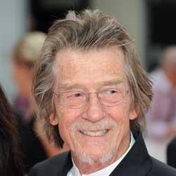

|
|
John Hurt
John Hurt was born in Chesterfield, Derbyshire, the son of Phyllis (née Massey), an amateur actress and engineer, and Arnould Herbert Hurt, a mathematician who became an Anglican clergyman and served as vicar of Shirebrook. Hurt's father was also a vicar at St John's Church in Sunderland. In 1937, he moved his family to Derbyshire, where he became Perpetual Curate of Holy Trinity Church. When Hurt was five, his father became the vicar of St. Stephen's Church in Woodville, Derbyshire, and remained there until 1952.
In 1945, Hurt's father founded 1st Woodville (St. Stephen's) Scout Group, which is still going today. Hurt had a strict upbringing; the family lived opposite a cinema, but he was not allowed to see films there. He was also not permitted to mix with local children because his parents saw them as "too common".
At the age of eight, Hurt was sent to the Anglican St Michael's Preparatory School in Otford, Kent, where he eventually developed his passion for acting. He decided he wanted to become an actor, and his first role was that of a girl in a school production of The Bluebird (L'Oiseau Bleu) by Maurice Maeterlinck. While he was a pupil at the school, he was abused by Donald Cormack (now deceased), then Senior Master of the school and later Head Teacher (until his retirement in 1981). Hurt described how Cormack would remove his two false front teeth and put his tongue in the boys' mouths, and how he would rub their faces with his stubble. Hurt said that the experience affected him hugely.
Hurt's father moved to Old Clee Church in Grimsby, Lincolnshire. Hurt (then aged 12) became a boarder at Christ's Hospital School (then a grammar school) in Lincoln, because he had failed the entrance exam for admission to his brother's school. Hurt often accompanied his mother to Cleethorpes Repertory Theatre, but his parents disliked his acting ambitions and encouraged him to become an art teacher instead. His headmaster, Mr. Franklin, laughed when Hurt told him he wanted to be an actor, telling him that he "wouldn't stand a chance in the profession".
Aged 17, Hurt enrolled in Grimsby Art School (now the East Coast School of Art & Design), where he studied art. In 1959, Hurt won a scholarship allowing him to study for an Art Teacher's Diploma (ATD) at Saint Martin's School of Art in London. Despite the scholarship, paying for his studies was financially difficult, so he persuaded some of his friends to pose nude and sold the portraits. In 1960, he won a scholarship to RADA, where he trained for two years. He was then cast in small roles on television.
Hurt's first film was The Wild and the Willing (1962), but his first major role was as Richard Rich in A Man for All Seasons (1966). In 1971 he played Timothy Evans, who was hanged for murders committed by his landlord John Christie, in 10 Rillington Place, earning him his first BAFTA nomination for Best Supporting Actor. His portrayal of Quentin Crisp in the 1975 TV play The Naked Civil Servant gave him prominence and earned him the British Academy Television Award for Best Actor. The following year, Hurt played the Roman emperor Caligula in the BBC drama serial, I, Claudius. In 1978 he appeared in Midnight Express, for which he won a Golden Globe and a BAFTA and was nominated for an Academy Award for Best Supporting Actor (the latter of which he lost to Christopher Walken for his performance in The Deer Hunter). Hurt voiced Hazel, the heroic rabbit leader of his warren in the film adaptation of Watership Down and later played the major villain, General Woundwort, in theanimated television series version.
His roles at the end of the 1970s and the beginning of the 1980s included Kane, the first victim of the title creature in the film Alien (a role which he reprised as a parody in Spaceballs); would-be art school radical Scrawdyke in Little Malcolm; and "John" Merrick in the Joseph Merrick biography The Elephant Man, for which he won another BAFTA and was nominated for a Golden Globe and an Academy Award for Best Actor. In 1978 he lent his voice to Ralph Bakshi's animated film adaptation of Lord of the Rings, playing the role of Aragorn. He also had a starring role in Sam Peckinpah's critically panned but moderately successful final film, The Osterman Weekend (1983). Also in 1983 he starred as the Fool opposite Laurence Olivier's King in King Lear. Hurt also appeared as Raskolnikov in the 1979 BBC TV mini-series adaptation of Crime and Punishment.
Hurt played Winston Smith in the 1984 adaptation of the novel Nineteen Eighty-Four. In 1985 he starred in Disney's The Black Cauldron, voicing the film's main antagonist, the Horned King. In 1986, Hurt provided the voiceover for AIDS: Iceberg / Tombstone, a public information film warning of the dangers of AIDS. In 1988 he played the title role, the on-screen narrator, in Jim Henson's The StoryTeller TV series. He had a supporting role as "Bird" O'Donnell in Jim Sheridan's 1990 film The Field, which garnered him another BAFTA nomination. In 1997, Hurt played the reclusive tycoon S.R. Hadden in Contact.
In 2001, he played Mr. Ollivander, the wand-maker, in the first Harry Potter film, Harry Potter and the Philosopher's Stone. He returned for the adaptation of Harry Potter and the Goblet of Fire, though his scenes in that film were cut. He also returned for Harry Potter and the Deathly Hallows – Part 1 and Part 2. In 1999, Hurt provided narration on the British musical group Art of Noise's concept album The Seduction of Claude Debussy. During this time, he narrated a four-part series on the Universe which was released on DVD in 1999. In the 2006 film V for Vendetta he played the role of Adam Sutler, leader of the Norsefirefascist dictatorship. In May 2008, he appeared in Steven Spielberg's Indiana Jones and the Kingdom of the Crystal Skull as Harold Oxley. He is also the voice of The Great Dragon Kilgharrah, who aids the young warlock Merlin as he protects the future king Arthur, in the BBC television series Merlin.
In 2008, 33 years after The Naked Civil Servant, Hurt reprised the role of Quentin Crisp in An Englishman in New York. This film depicts Crisp's later years in New York.
In June 2009, Hurt played the on-screen Big Brother for Paper Zoo Theatre Company's production of Orwell's Nineteen Eighty-Four. The theatre production premiered at the National Media Museum, in Bradford and toured during 2010. Hurt said, "I think Paper Zoo thought it would be quite ironic to have the person who played Winston having risen in the party. From the Chestnut Tree Cafe, he's managed to get his wits together again, now understanding that 2 and 2 make 5, and becomes Big Brother. So it tickled my fancy, and of course I looked up Paper Zoo, and they seem to me to be the sort of company that’s essential in the country as we know it, and doing a lot of really good stuff."
At the 65th British Academy Film Awards Hurt won the award for Outstanding British Contribution to Cinema.
In 2013 Hurt appeared in the Doctor Who 50th anniversary episode "The Day of the Doctor", as a 'forgotten' incarnation of the Doctor, known as the War Doctor.
Hurt is due to appear alongside Ben Kingsley in a film entitled Broken Dream, to be directed by Neil Jordan.
Hurt has an older brother, Br. Anselm (born Michael), a Roman Catholic convert who became a monk and writer at Glenstal Abbey; Hurt has contributed to his brother's books. Hurt also has an adopted sister, Monica. In 1962, Hurt's father left his parish in Cleethorpes to become headmaster of St. Michael's College in the Central American country of British Honduras. In that same year, Hurt first performed on the London stage and married actress Annette Robertson. The marriage ended in 1964. In 1967, he began his longest relationship, with French model Marie-Lise Volpeliere-Pierrot, sister of fashion photographer Jean-Claude Volpeliere-Pierrot. The couple had planned to get married after 15 years, when events took a tragic turn on 26 January 1983; Hurt and Volpeliere-Pierrot went horse riding early in the morning near their house in Ascott-under-Wychwood, Oxfordshire. Volpeliere-Pierrot was thrown off her horse and suffered a fall. She went into a coma and died later that day. Hurt's mother died in 1975, and his father died in 1999 at the age of 95. In September 1984, Hurt married his old friend, Texas actress Donna Peacock, at a local Register Office. The couple moved to Kenya, but divorced in January 1990.
On 24 January 1990, Hurt married American production assistant Joan Dalton, whom he had met while filming Scandal. With her he had two sons: Alexander "Sasha" John Vincent Hurt (born 6 February 1990) and Nicholas "Nick" Hurt (born 5 February 1993), who are currently residing in County Waterford, Ireland. Nick has gone to acting school in England and wishes to follow in his father's footsteps. This marriage ended in 1996 and was followed with a seven-year relationship with Dublin-born presenter and writer Sarah Owens. The couple moved to County Wicklow, where they settled close to their friends, director John Boorman, andCladdagh Records founder and Guinness heir The Hon Garech de Brún. In July 2002 the couple separated. In March 2005, Hurt married his fourth wife, advertising film producer Anwen Rees Meyers. He now lives near Cromer, Norfolk.
In 2004, Hurt was made a Commander of the Order of the British Empire (CBE).
In January 2002, Hurt received an honorary degree from the University of Derby and in January 2006 he received an honorary degree of Doctor of Letters from the University of Hull.
In 2007 Hurt took part in the BBC genealogical television series Who Do You Think You Are?, which investigated part of his family history. Prior to participating in the programme, Hurt had harboured a love of Ireland and was enamoured of a 'deeply beguiling' family legend that suggested his great-grandmother had been the illegitimate daughter of Irish nobleman the Marquess of Sligo. The genealogical evidence uncovered seemed to contradict the family legend, rendering the 'suggestion' doubtful. Coincidentally the search revealed that his great-grandmother had previously lived in Grimsby at a location within a mile of the art college at which Hurt had once enrolled.
Since 2006, John Hurt has been a patron of Project Harar, a UK-based charity working in Ethiopia for children with facial disfigurements.
Since 2009 he has been patron of QUAD, an arts centre in Derby. On 25 September 2009 Hurt visited QUAD and took part in a Q&A directly preceding a screening of the film The Night Train as part of the festivities, celebrating QUAD's first birthday (it opened on 26 September 2008). The following day he was guest of honour at Derby County vs Bristol City and went onto the pitch at Pride Park at half-time to oversee a prize draw.
In 2012 he was appointed the first Chancellor of Norwich University of the Arts.
On 23 January 2013 he was made an Honorary Doctor of Arts by the University of Lincoln, England at Lincoln Cathedral. Hurt has been announced as patron of Norwich Cinema City in March 2013.
|